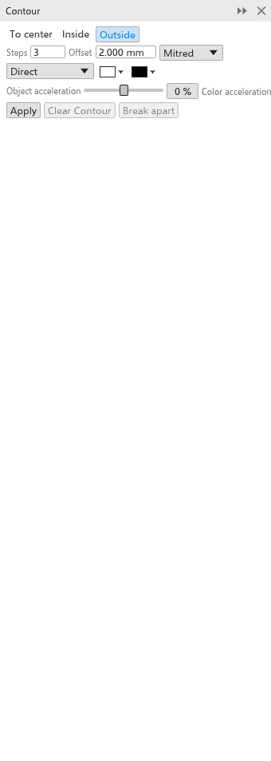

轮廓图
轮廓图在对象内部、外部或向其中心绘制等距的对象轮廓副本，就像地图上的等高线。它是一种实时效果：更改对象，轮廓图会随之改变。
添加轮廓图
使用工具：
- 从效果展开工具栏中选择 轮廓图 工具。
- 从对象上拖动：远离其中心拖动得到外部轮廓图，朝向中心拖动得到内部轮廓图。拖得越远，间距越大。
使用面板：
- 选择一个对象。
- 使用 效果 > 轮廓图（Ctrl+F9）打开 轮廓图 面板。
- 设置选项并单击 应用。

群组和位图不能应用轮廓图。
轮廓图设置
属性栏和面板显示所选轮廓图的设置，并立即对其进行更改。
- 到中心、内部 或 外部（起初选用）。
- 步数：起初为 3，最多 999。到中心会生成能容纳的最大数量。
- 偏移：步骤之间的距离（起初为 2 mm）。
- 角：斜接（尖角，起初选用）、圆角或斜切。
- 颜色方向：从对象的颜色到最后一步的颜色，沿色轮直接、顺时针或逆时针过渡。
- 最后一步的填充和轮廓颜色（起初为白色和黑色）。没有填充的对象会得到无填充的步骤。
- 对象加速 和 颜色加速（-100 到 100%）使步骤或颜色向对象或向最后一步聚集。
外部步骤绘制在对象后面，内部步骤绘制在对象前面。
清除轮廓图 删除轮廓图；拆分 将步骤变为对象。这些步骤会编组放在对象旁边。对象 > Break Contour Group Apart（Ctrl+K，右键菜单中也有）效果相同。